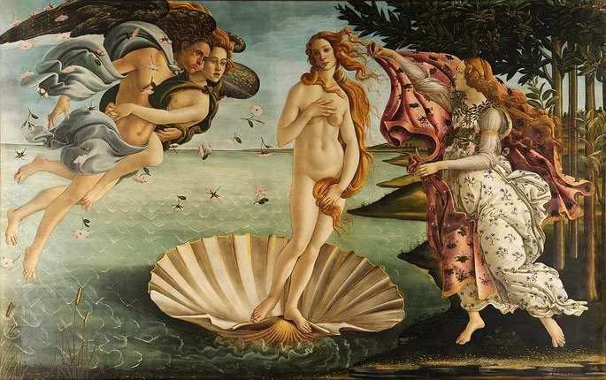
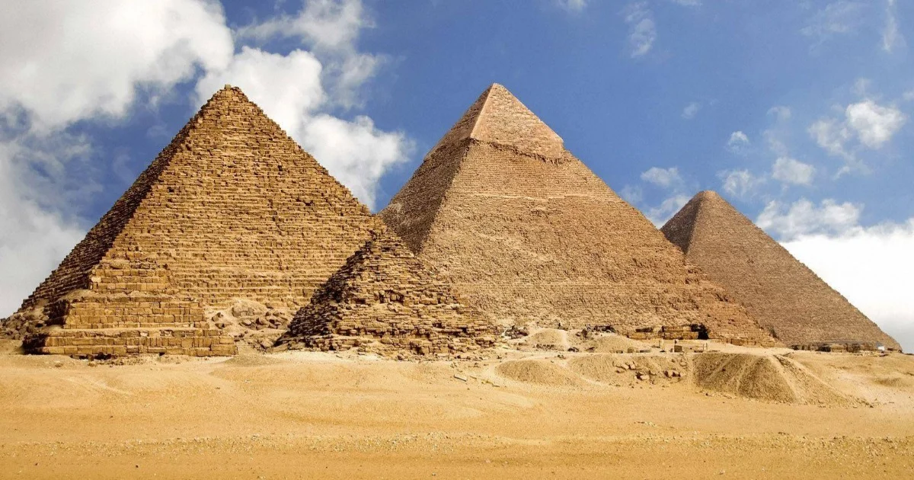

Se não for muito incômodo, você poderia fazer o que estar pedindo abaixo? :)
Prazer em lhe conhecer, (nome) <3
Como isso afeta na arte e cultura?
Como dito na seção de cosmogonia, os fenômenos das naturezas e os acontecimentos inexplicáveis pelo ser humano da época eram explicados por meio de mitologias, ou seja, elas eram essenciais para o entendimento de mundo daqueles povos, assim, afetando diretamente a cultura e a arte deles. Exemplos dessa influência são as pinturas mitológicas, sendo elas fundamentais para a expressão das identidades religiosas greco-romana, que dita práticas culturais e artísticas, expressando crenças relacionadas a diversos temas, como vênus, que personifica os conceitos do amor e beleza.

Nascimento de Vênus - Sandro Botticelli
Momentos históricos
Desse modo, assim como a mitologia afetou a arte e cultura, a história está intrinsecamente conectada as narrativas envolta de suas crenças, se tornando essenciais para o entendimento das populações antigas e de momentos históricos marcantes da humanidade. As pirâmides do Egito exemplificam a magnitude da influência mitológica nas ações daqueles povos, produzindo grandes monumentos para a ascensão dos faraós aos céus, produzindo conhecimentos matemáticos e arquitetônicos estudados até a atualidade, isso concretiza a pegada histórica deixadas por essas narrativas.

Pirâmides do Egito
Arte e cultura na contemporaneidade
A importância inegável dessas narrativas cosmogônicas reverbera até a atualidade, isso é observado não somente no âmbito religioso, mas na matemática, filosofia, arte, história e diversas outras áreas de estudo. Em vista disso, é evidente a presença dessas crenças enraizadas no entendimento de mundo de diversas pessoas ao redor do globo, haja vista que isso percorre por nossa história, assim é visto na valorização e retomada de nomes místicos das crenças de matriz africana como simbolismo de poder e força para os movimentos negros, trazendo a cultura e arte marginalizada como orgulho. Acontecimento que solidifica isto foi visto no carnaval de 2022, onde a escola de samba Acadêmicos do Grande Rio foi a vencedora daquele ano, exaltando a cultura afrodescendente Brasileira com a figura de Exu, que sofreu diversos ataques preconceituosos, revelando o racismo religioso enfrentado por essa população.
Representação de Exu do Acadêmicos do Grande Rio, Carnaval 2022
Exu, orixá guardião da comunicação de religiões de matriz africana como candomblé e Umbanda, é também um dos vários símbolos de resistência negra